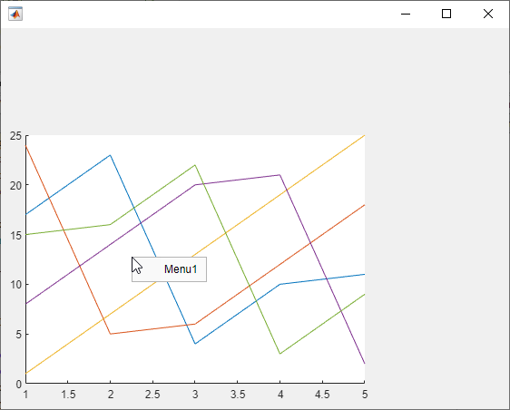

open
Open context menu at location within UI figure
Description
Examples
Create a UI figure. Create a context menu with two submenus and assign it to the UI figure.
fig = uifigure; cm = uicontextmenu(fig); m1 = uimenu(cm,'Text','Import Data'); m2 = uimenu(cm,'Text','Export Data'); fig.ContextMenu = cm;
Then, open the context menu at location (250,250).
open(cm,250,250)

Open an unassigned context menu when you right-click on a blank area
of the UI figure it is parented to or on a graphics object that supports the
ButtonDownFcn property.
First, create a program file called openCtxtMenu.m. Within the
program file:
Create UI axes in a UI figure and plot data in the axes.
Create a context menu with one submenu in the UI figure.
Set the
WindowButtonDownFcnproperty to a callback function calledonButtonDown.Create a callback function called
onButtonDown. In it, determine if the selection is a right-click by querying theSelectionTypeproperty of the UI figure. When a right-click occurs, get the x- and y-coordinates of the mouse pointer from theCurrentPointproperty. The x- and y-coordinates are the first and second elements of the vector it returns. Then, open the context menu at those coordinates. When other selection types occur, display a message in the Command Window.
function openCtxtMenu fig = uifigure; ax = uiaxes(fig); plot(ax,magic(5)); cm = uicontextmenu(fig); m = uimenu(cm,'Text','Menu1'); fig.WindowButtonDownFcn = @onButtonDown; function onButtonDown(src,event) clickType = src.SelectionType; switch clickType case 'alt' x = src.CurrentPoint(1); y = src.CurrentPoint(2); open(cm,x,y) otherwise disp('Right-click to view context menu') end end end
Run the program file, then right-click on the UI axes or on a blank spot within the UI figure to open the context menu.
openContextMenu

Input Arguments
Tips
Close the context menu by pressing a key or clicking your mouse outside of the context menu. You cannot close a context menu programmatically.
Algorithms
ContextMenuOpeningFcn callback functions do not execute when you call
the open function. The callback functions are triggered by user
interactions only.
Version History
Introduced in R2020a